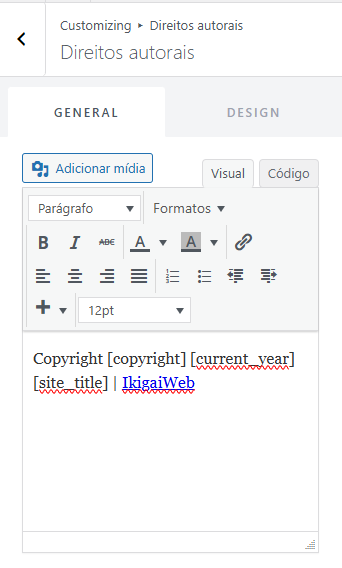
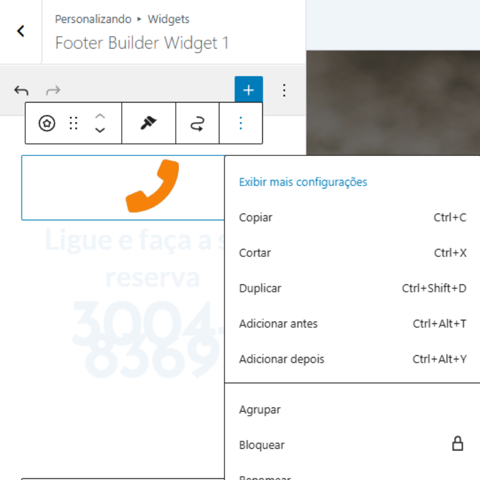

Construtor de rodapé para sites WordPress com novo Astra:
Com o tema Astra instalado e ativo no WordPress, vá para Aparência > Personalizar > Rodapé > Construir rodapé.
Escolha o número de linhas e colunas desejadas para o rodapé do site. Em seguida, adicione os blocos desejados em cada seção do rodapé, como texto, menus, ícones sociais, etc. Personalize o estilo e o layout conforme necessário. Após concluir as configurações, clique em "Publicar" para salvar as alterações e tornar o rodapé visível no site.
Dessa forma, você pode criar um rodapé personalizado para o seu site WordPress usando o construtor de rodapé do tema Astra.
Inserindo Rodapé Personalizado - Copyright
Para adicionar um rodapé personalizado com informações de copyright no WordPress usando o tema Astra, siga estes passos:
clique em "Aparência" no menu lateral do painel do WordPress.
Selecione "Personalizar" para abrir o personalizador de temas.
No personalizador, clique em "Rodapé" e depois em "Construir rodapé".
adicione um bloco de "Texto" na seção do rodapé onde deseja exibir as informações de copyright.

Inserindo um Rodapé Personalizado
Click em widgets no menu do personalizador.
Selecione a área do rodapé onde deseja adicionar o widget personalizado.
Adicione um widget de "Texto" ou "HTML Personalizado" à área do rodapé.
Para outras configurações de rodapé, como cores, tipografia e layout, você pode explorar as opções disponíveis no personalizador do Astra.

Click sobre os três pontos para acessar mais opções.